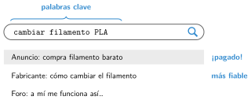
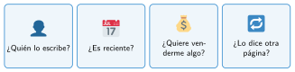

Buscar información en internet
🤔 Pienso5 min
Qué hago aquí: Piensa un momento y contesta con lo que ya sabes. No pasa nada si no lo sabes: es para empezar.
Escribe impresora en el buscador. ¿Te sirven los resultados para saber cómo cambiar el filamento de la impresora del taller?
📖 Leo y aprendo15 min
Qué hago aquí: Lee despacio, mira los dibujos y los ejemplos, y quédate con la idea clave del final.
Para usar internet necesitas dos cosas:
- Un navegador: el programa que abre las páginas (Chrome, Firefox, Edge…).
- Un buscador: la página que encuentra otras páginas (Google, Bing…).
En el buscador no escribas frases largas. Escribe solo las palabras clave: las palabras más importantes.

No todo lo que hay en internet es verdad. Antes de creer una página, hazte estas preguntas:

Lo que hay en internet tiene un autor. Si usas una imagen o un texto, escribe de dónde lo has sacado: es citar la fuente.
✏️ Hago25 min
Qué hago aquí: Haz las actividades en orden. Empieza siempre por las básicas.
Rodea las palabras clave de esta frase: quiero saber cuáles son las partes de una impresora 3D.
Escribe las palabras clave para buscar:
- Cómo hacer un agujero en Tinkercad.
- Un vídeo sobre robots en las fábricas.
Busca a qué temperatura se imprime el PLA. Escribe el dato y la página donde lo has encontrado.
Mira la página de la actividad anterior. Responde a las cuatro preguntas: ¿es fiable?
✏️ Puedes responder escribiendo, con un dibujo o un esquema, o contándolo en voz alta.
Busca el mismo dato en otra página. ¿Dicen lo mismo? ¿Cuál te parece más fiable y por qué?
🚀 Amplío (si quieres saber más)
Qué hago aquí: ¿Has terminado? Lee la curiosidad o elige el reto. Es voluntario.
Busca el manual de una máquina del taller con filetype:pdf. Guarda el enlace en tu carpeta del bloque I.
✅ Compruebo5 min
Qué hago aquí: Contesta sin mirar la ficha y marca cómo lo llevas.